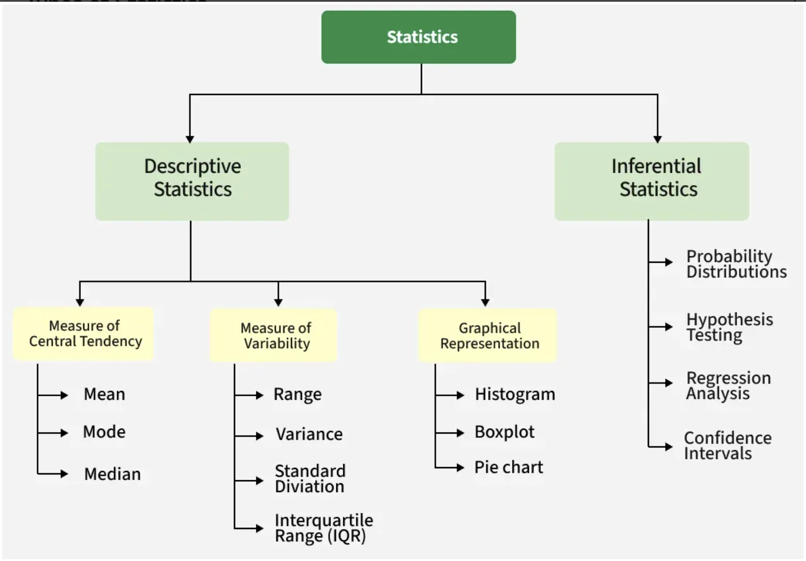
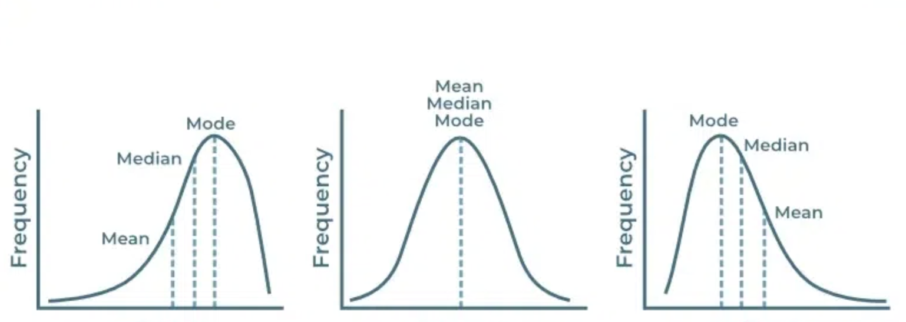

graph TD
A[Variable Types]
A --> B[Categorical]
A --> C[Numerical]
B --> B1["Nominal<br/>e.g., gender, major"]
B --> B2["Ordinal<br/>e.g., rating, education level"]
C --> C1["Discrete<br/>e.g., count (# of students)"]
C --> C2["Continuous<br/>e.g., measurements like height, weight"]
classDef root fill:#e1f5fe,stroke:#01579b,stroke-width:3px
classDef categorical fill:#f3e5f5,stroke:#4a148c,stroke-width:2px
classDef numerical fill:#e8f5e8,stroke:#1b5e20,stroke-width:2px
classDef nominal fill:#fce4ec,stroke:#880e4f,stroke-width:2px
classDef ordinal fill:#fff3e0,stroke:#e65100,stroke-width:2px
classDef discrete fill:#e0f2f1,stroke:#00695c,stroke-width:2px
classDef continuous fill:#f1f8e9,stroke:#33691e,stroke-width:2px
class A root
class B categorical
class C numerical
class B1 nominal
class B2 ordinal
class C1 discrete
class C2 continuous
Lecture 2: Descriptive Statistics I - Part II
Understanding Data (PSTAT 5A) – Week 1
Today’s Agenda
- Introduction to Descriptive Statistics (10 minutes)
- What is descriptive statistics?
- Why it matters before any modeling
- Types of Data and Measurement Scales (15 minutes)
- Measures of Central Tendency (35 minutes)
- Mean (12 minutes)
- Median (12 minutes)
- Mode (11 minutes)
- Python Implementation (15 minutes)
- Real-world Applications and Interpretation (5 minutes)
Quick ice-breaker: ask students for one dataset they’ve looked at recently and what first question they asked about it.
Learning Objectives (LOs)
By the end of this lecture you should be able to:
Define descriptive statistics and explain its importance in data analysis (Section 1)
Distinguish between different types of data and measurement scales (Section 2)
Calculate and interpret measures of central tendency (mean, median, mode)(Section 3)
Understand when to use each measure of central tendency
Apply Python to compute descriptive statistics(Section 9)
Interpret basic descriptive statistics in real-world contexts(Section 10)
Introduction to Descriptive Statistics
10 minutes
Statistics
Facts are stubborn, but statistics are more pliable.
Mark Twain
- Statistics refers to the mathematics and techniques with which we understand data. 1
What are Descriptive Statistics?
Descriptive statistics are numerical and graphical methods used to summarize, organize, and describe data in a meaningful way.
Purpose of Descriptive Statistics
- Summarize large datasets into manageable information
- Identify patterns and trends in data
- Communicate findings clearly to others
- Prepare data for further analysis
- Make initial assessments about data quality
Descriptive vs. Inferential Statistics
| Descriptive Statistics | Inferential Statistics |
|---|---|
| Describes what the data shows | Makes predictions about populations |
| Summarizes sample data | Uses sample data to make generalizations |
| No conclusions beyond the data | Draws conclusions beyond the immediate data |
| Examples: mean, median, graphs | Examples: hypothesis testing, confidence intervals |
Descriptive vs. Inferential Statistics

Types of Data and Measurement Scales
15 minutes
Why Data Types Matter
Understanding data types is crucial because:
- Different statistics are appropriate for different data types
- Statistical methods depend on the level of measurement
- Misapplying statistics can lead to incorrect conclusions
Types of Data
Prompt: Which summary stat would you pick for “major”? For “gpa”?
Categorical Data (Qualitative)
Nominal Data
- Categories with no natural order
- Examples: gender, color, brand names, marital status
- Appropriate statistics: mode, frequency counts, proportions
Ordinal Data
- Categories with a natural order or ranking
- Examples: education level, satisfaction ratings, letter grades
- Appropriate statistics: mode, median, percentiles
Numerical Data (Quantitative)
Discrete Data
- Countable values, often integers
- Examples: number of children, cars sold, defective items
- Can take on finite or countably infinite values
Continuous Data
- Can take any value within a range
- Examples: height, weight, temperature, time
- Measured rather than counted
Measurement Scales Summary
| Scale | Type | Properties | Examples | Appropriate Statistics |
|---|---|---|---|---|
| Nominal | Categorical | Categories only | Gender, Color | Mode, Frequency |
| Ordinal | Categorical | Order matters | Rankings, Grades | Mode, Median |
| Interval | Numerical | Equal intervals, no true zero | Temperature (°C) | Mean, Median, Mode |
| Ratio | Numerical | Equal intervals, true zero | Height, Weight, Income | All statistics |
Measures of Central Tendency
35 minutes
%%{init: {'flowchart': {'nodeSpacing': 150, 'rankSpacing': 200}, 'width': 800, 'height': 600}}%%
graph TD
A["Measures of Central Tendency"]
A --> B["Mean (Average)"]
A --> C["Median (Middle Value)"]
A --> D["Mode (Most Frequent)"]
B --> B1["Sum of all values ÷<br/>Number of values"]
B --> B2["Best for:<br/>Symmetric distributions"]
B --> B3["Affected by:<br/>Outliers"]
C --> C1["Middle value when<br/>data is ordered"]
C --> C2["Best for:<br/>Skewed distributions"]
C --> C3["Resistant to:<br/>Outliers"]
D --> D1["Value that appears<br/>most frequently"]
D --> D2["Best for:<br/>Categorical data"]
D --> D3["Can have: Multiple modes<br/>or no mode"]
classDef main fill:#e3f2fd,stroke:#0d47a1,stroke-width:3px
classDef mean fill:#fff3e0,stroke:#e65100,stroke-width:2px
classDef median fill:#e8f5e8,stroke:#2e7d32,stroke-width:2px
classDef mode fill:#f3e5f5,stroke:#7b1fa2,stroke-width:2px
classDef details fill:#fafafa,stroke:#616161,stroke-width:1px
class A main
class B mean
class C median
class D mode
class B1,B2,B3,C1,C2,C3,D1,D2,D3 details
What is Central Tendency?
Central tendency describes the center or typical value of a dataset.
It answers the question: “What is a representative value for this data?”
The Mean (Arithmetic Average)
12 minutes
Definition and Formula
The mean is the sum of all values divided by the number of values.
. . .
Formula
- For a sample: \(\bar{x} = \frac{\sum x}{n}\)
- For a population: \(\mu = \frac{\sum x}{N}\)
Where:
- \(\bar{x}\) (x-bar) = sample mean
- \(\mu\) (mu) = population mean
- \(\sum x\) = sum of all values
- \(n\) = sample size, \(N\) = population size
Example Calculation
Student test scores: 85, 90, 78, 92, 88
. . .
Mean = \(\frac{85 + 90 + 78 + 92 + 88}{5} = \frac{433}{5} = 86.6\)
Properties of the Mean
- Uses all data points - every value affects the mean
- Sensitive to outliers - extreme values can distort the mean
- Unique - there is only one mean for a dataset
- Can be calculated for interval and ratio data
- Balancing point - sum of deviations from mean equals zero
When to Use the Mean
✅ Use the mean when:
- Data is approximately symmetric
- No extreme outliers present
- Working with interval or ratio data
- Need to use the value in further calculations
Advantages and Disadvantages
Advantages
- Uses all information in the dataset
- Algebraically defined and mathematically tractable
- Widely understood and accepted
Disadvantages
- Affected by outliers and skewed distributions
- May not represent a typical value in skewed data
- Cannot be used with nominal or ordinal data
The Median
12 minutes
Definition
The median is the middle value when data is arranged in ascending or descending order.
Calculation Steps
- Arrange data in ascending order
- Find the middle position:
- If n is odd: position = \(\frac{n + 1}{2}\)
- If n is even: average of positions \(\frac{n}{2}\) and \(\frac{n}{2} + 1\)
Examples
Odd number of values:
Data: 12, 15, 18, 20, 25
What is the median here ?
Median = 18 (middle value)
Even number of values:
Data: 10, 15, 20, 25, 30, 35
What is the median here ?
Median = \(\frac{20 + 25}{2} = 22.5\)
Properties of the Median
- Not affected by outliers - resistant measure
- Represents the 50th percentile
- May not be an actual data value (when n is even)
- Appropriate for ordinal, interval, and ratio data
- Divides data into two equal halves
When to Use the Median
✅ Use the median when:
- Data is skewed (not symmetric)
- Outliers are present
- Working with ordinal data
- Want a robust measure of central tendency
- Data represents income, housing prices, or similar distributions
Median vs Mean with Outliers
Consider household incomes: $30,000, $32,000, $35,000, $38,000, $2,000,000
. . .
- Mean = $427,000 (not representative of typical household)
- Median = $35,000 (better represents typical household)
The Mode
11 minutes
Definition
The mode is the value that appears most frequently in a dataset.
Types of Distributions by Mode
- Unimodal: One mode
- Bimodal: Two modes
- Multimodal: More than two modes
- No mode: All values appear with equal frequency
%%{init: {'flowchart': {'nodeSpacing': 100, 'rankSpacing': 100}, 'width': 600, 'height': 400}}%%
graph TD
A["Mode Types"]
A --> B["Unimodal<br/>One peak"]
A --> C["Bimodal<br/>Two peaks"]
A --> D["Multimodal<br/>Multiple peaks"]
A --> E["No Mode<br/>No repeated values"]
classDef main fill:#e1f5fe,stroke:#01579b,stroke-width:3px,font-size:16px
classDef types fill:#f5f5f5,stroke:#424242,stroke-width:2px,font-size:14px
class A main
class B,C,D,E types
Mode Examples
Example 1:
Data: 2, 3, 3, 4, 5, 5, 5, 6, 7
Analysis:
- Count each value: 2(1), 3(2), 4(1), 5(3), 6(1), 7(1)
- Most frequent value: 5 appears 3 times
- Mode = 5
- Type: Unimodal (one mode)
Example 2:
Data: 1, 2, 2, 3, 4, 4, 5
Analysis:
- Count each value: 1(1), 2(2), 3(1), 4(2), 5(1)
- Most frequent values: 2 and 4 both appear twice
- Modes = 2 and 4
- Type: Bimodal (two modes)
Example 3:
Data: 1, 2, 3, 4, 5
Analysis:
- Count each value: 1(1), 2(1), 3(1), 4(1), 5(1)
- All values appear exactly once
- No mode (no value repeats)
- Type: No mode
Mode for Different Data Types
Categorical Data:
Favorite colors: Red, Blue, Blue, Green, Blue, Red, Blue Mode = Blue
Continuous Data:
Often requires grouping into intervals or bins Example: Heights grouped into ranges
Properties of the Mode
- Can be used with any type of data (nominal, ordinal, interval, ratio)
- Not affected by outliers
- May not exist or may not be unique
- Represents the most common value
- Easy to identify in frequency distributions
When to Use the Mode
✅ Use the mode when:
- Working with categorical (nominal) data
- Want to identify the most popular or common choice
- Data has clear peaks in frequency
- Quality control applications (most common defect type)
- Business applications (best-selling product, most common customer complaint)
Comparing Measures of Central Tendency
| Measure | Best for Data Type | Strengths | Weaknesses | Affected by Outliers? |
|---|---|---|---|---|
| Mean | Interval, Ratio | Uses all data, mathematically tractable | Sensitive to outliers | Yes |
| Median | Ordinal, Interval, Ratio | Robust to outliers, represents middle | Ignores extreme values | No |
| Mode | All types | Works with categorical, identifies most common | May not exist/be unique | No |
Shape of Distribution Effects
- Symmetric distribution: Mean ≈ Median ≈ Mode
- Right-skewed (positively skewed): Mean > Median > Mode
- Left-skewed (negatively skewed): Mode > Median > Mean

Python Implementation
15 minutes
Essential Libraries
import numpy as np
import pandas as pd
from scipy import stats
import matplotlib.pyplot as pltCalculating the Mean
# Sample data
data = [85, 90, 78, 92, 88]
# Using NumPy
mean_np = np.mean(data)
print(f"Mean (NumPy): {mean_np}")
# Using Pandas
df = pd.DataFrame({'scores': data})
mean_pd = df['scores'].mean()
print(f"Mean (Pandas): {mean_pd}")Output:
Mean (NumPy): 86.6
Mean (Pandas): 86.6Calculating the Median
# Using NumPy
median_np = np.median(data)
print(f"Median (NumPy): {median_np}")
# Using Pandas
median_pd = df['scores'].median()
print(f"Median (Pandas): {median_pd}")Output:
Median (NumPy): 88.0
Median (Pandas): 88.0Calculating the Mode
# Using SciPy
from scipy import stats
mode_result = stats.mode(data)
print(f"Mode: {mode_result.mode}, Count: {mode_result.count}")
# Using Pandas
mode_pd = df['scores'].mode()
print(f"Mode (Pandas): {mode_pd.values}")Comprehensive Analysis Function
def descriptive_summary(data, column_name="Data"):
"""Calculate comprehensive descriptive statistics"""
df = pd.DataFrame({column_name: data})
print(f"Descriptive Statistics for {column_name}")
print("=" * 40)
print(f"Count: {len(data)}")
print(f"Mean: {np.mean(data):.2f}")
print(f"Median: {np.median(data):.2f}")
try:
mode_result = stats.mode(data)
print(f"Mode: {mode_result.mode[0]} (appears {mode_result.count[0]} times)")
except:
print("Mode: No unique mode")
return df.describe()
# Example usage
test_scores = [85, 90, 78, 92, 88, 91, 85, 87, 89, 86]
summary = descriptive_summary(test_scores, "Test Scores")Handling Categorical Data
# Categorical data example
categories = ['A', 'B', 'B', 'C', 'A', 'B', 'A', 'C', 'B', 'B']
cat_series = pd.Series(categories)
print("Categorical Data Analysis:")
print(f"Mode: {cat_series.mode().values[0]}")
print("\nValue Counts:")
print(cat_series.value_counts())Output:
Categorical Data Analysis:
Mode: B
Value Counts:
B 5
A 3
C 2Real-world Applications
5 minutes
Business Applications
- Customer Satisfaction: Mean rating shows overall satisfaction, median shows typical experience
- Sales Data: Mode identifies best-selling products, median shows typical sale amount
- Employee Performance: Mean for overall team performance, median for typical employee
Educational Applications
- Test Scores: Mean for class average, median for typical student performance
- Grade Distribution: Mode shows most common grade
- Attendance: Mean for overall attendance rate
Healthcare Applications
- Patient Wait Times: Median often preferred due to skewed distributions
- Treatment Outcomes: Mean for overall effectiveness, mode for most common result
- Vital Signs: All three measures provide different insights
Interpretation Guidelines
- Always consider the context of your data
- Report multiple measures when appropriate
- Be aware of data distribution shape
- Consider the presence of outliers
- Choose the most appropriate measure for your specific question
Key Takeaways
Remember These Points
- Data type determines which statistics are appropriate
- Mean uses all data but is sensitive to outliers
- Median is robust and represents the middle value
- Mode identifies the most common value and works with all data types
- Context matters when choosing and interpreting measures
- Python provides powerful tools for calculating descriptive statistics
Next Lecture Preview
Descriptive Statistics Part II will cover:
- Measures of variability (range, variance, standard deviation)
- Measures of position (percentiles, quartiles, z-scores)
- Shape of distributions (skewness and kurtosis)
- Advanced Python visualization techniques
Practice Problems
Try These Problems
Calculate mean, median, and mode for: 12, 15, 18, 12, 20, 25, 12, 30
A dataset has mean = 50 and median = 45. What does this tell you about the distribution?
Why might median be preferred over mean for reporting household income?
Create a Python function to identify the most appropriate measure of central tendency for a given dataset.
Questions?
Thank you for your attention!